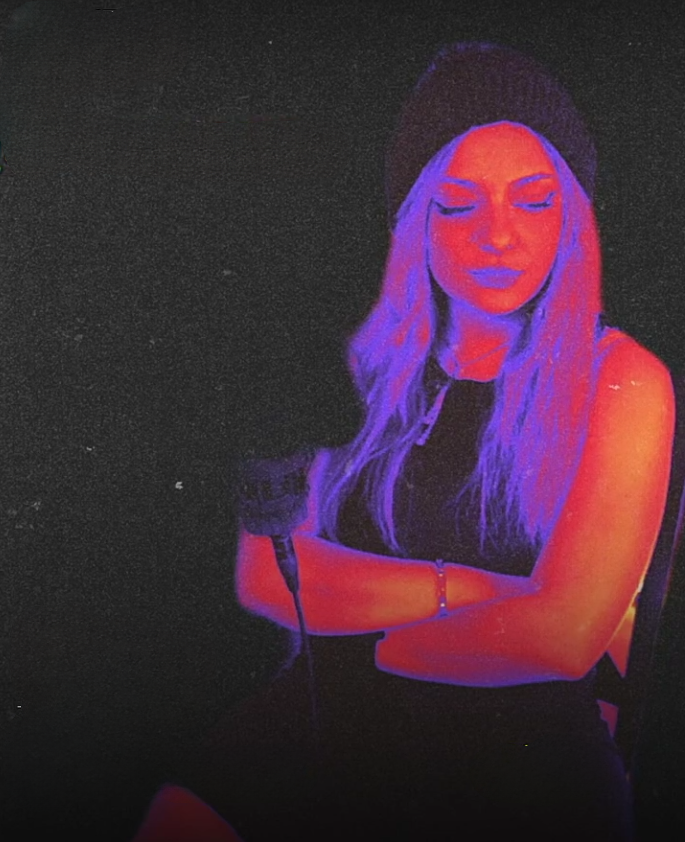
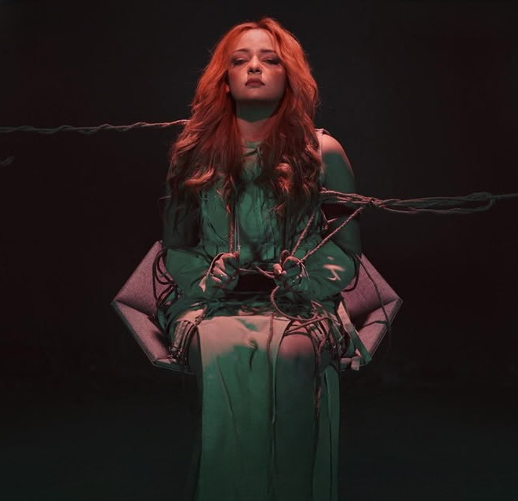

THE NEW VOICE OF RAP
A true queen never gives up she turns every obstacle into a step toward greatness
Hala Sherif is one of the most influential female rappers in the Arab world. She has shown that rap isn't just for men—women can dominate the scene too.
Through her music, hard work, and unique style, she has inspired many artists and helped change the perception of female rappers in the region. What truly sets Hala Sherif apart is her dedication to her craft. She consistently puts tremendous effort into her music and always strives to deliver her very best. Her lyrics and artistic vision respect the listener's intelligence, making her work stand out in today's rap scene. Whether you're a longtime fan or just discovering her music, her impact on Arab hip-hop is impossible to ignore.


Tlef Wetdoor tells the story of a toxic relationship and the emotional journey of leaving it.
The EP follows different stages of heartbreak: starting with trying to understand and fix someone’s harmful behavior, then realizing the toxic patterns, accepting that things cannot be changed, and finally finding the strength to let go and move on. Each track represents a chapter of this journey, showing the confusion, pain, awareness, and healing that come with ending a damaging relationship.
LISTEN NOWHala Sherif is not just a rapper, she is a true stage queen who knows how to control every moment under the lights With her powerful energy, unique presence, and unforgettable performances, Hala creates a connection with the crowd that makes every show a special experience From the first beat to the last lyric, she proves that the stage belongs to her.
Hala Sherif represented Egypt in the Egypt vs Sudan rap battle by Rap Shar3, proving her skills and confidence on a competitive stage. She delivered a strong performance that showed her unique flow, powerful presence, and ability to hold her own among talented rappers from different scenes.
Her participation highlighted the growth of female rap in the Arab world, showing that talent and skill have no limits. Hala brought her own style, energy, and personality to the battle, making her performance one of the memorable moments of the showcase
Bat3ala2 is a track that shows Hala Sherif’s emotional side, as she explores the feeling of being attached to someone while dealing with complicated emotions. The song focuses on the struggle between wanting to hold on and trying to understand your own feelings. Through honest lyrics and a personal style, Hala creates a connection with the listener, showing vulnerability while keeping her unique artistic identity. "Bat3ala2" highlights her ability to tell emotional stories and turn personal feelings into music that many people can relate to.

"In her interview with CBC, Hala Sherif talked about her journey in rap, her passion for music, the challenges she faced as a female rapper, and her goal of creating meaningful music that respects the listener’s mind
She also highlighted the importance of hard work, staying true to her identity, and continuing to develop her own style
Click below to watch the full interview.
WATCH NOW